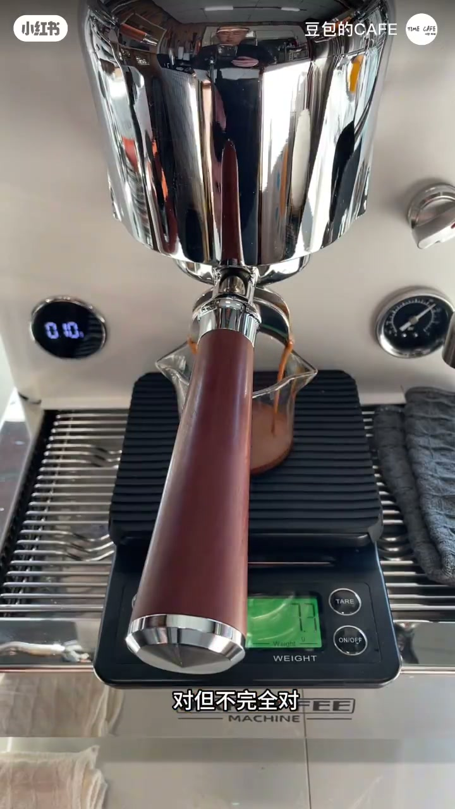
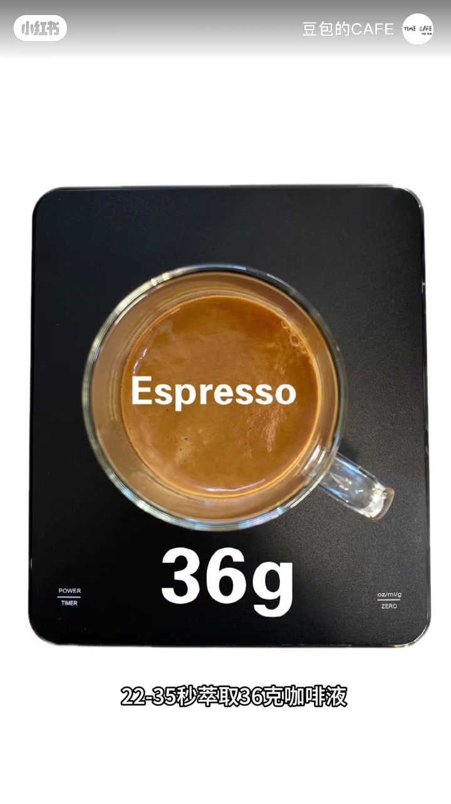
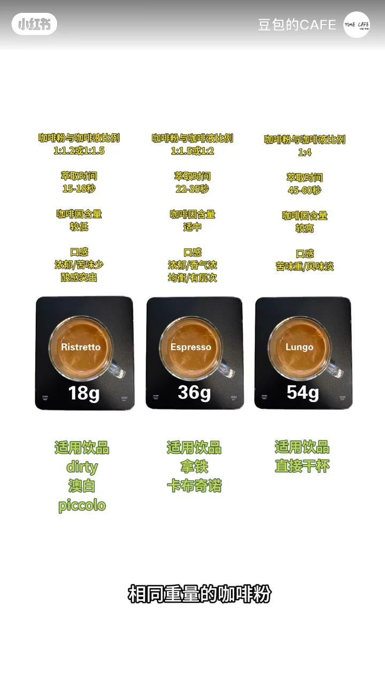
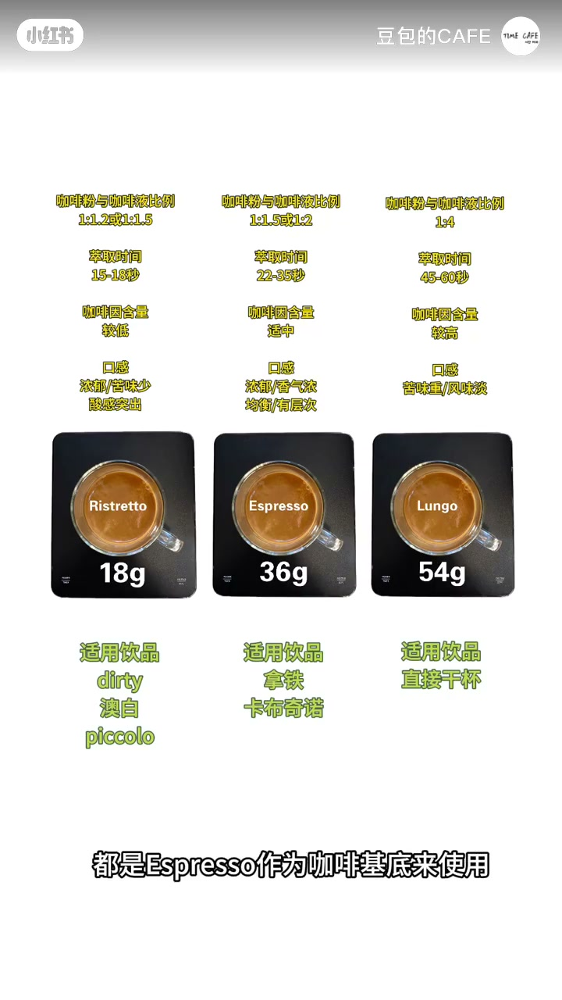
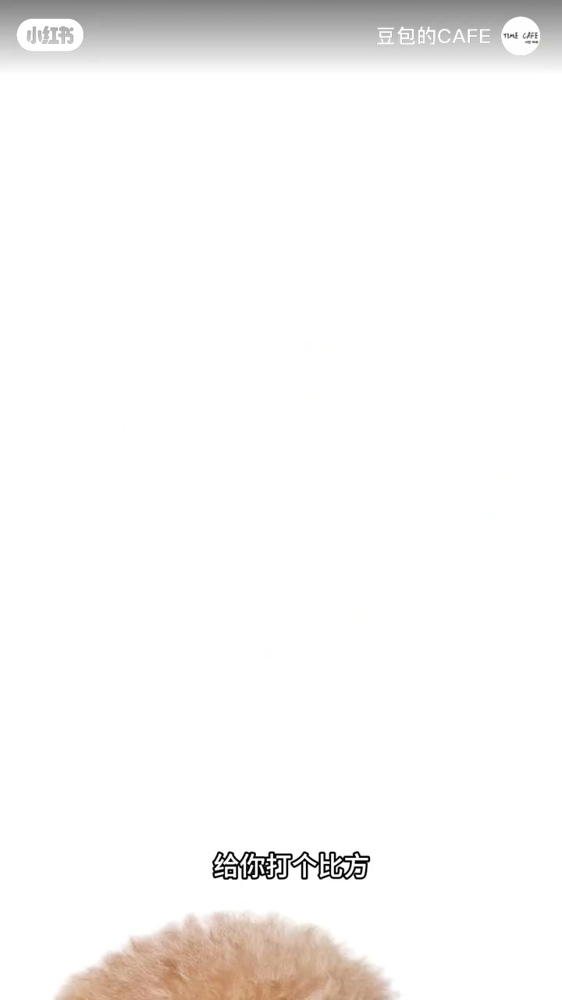

内容要点
很多人把 espresso 直接等同于「浓缩」。视频先肯定这个直觉，再纠偏：espresso 只是浓缩咖啡的一种。同用 18 克咖啡粉，用不同萃取时间与液重，可以得到 Espresso（约 22–35 秒、36 克）、Ristretto（约 15–18 秒、18 克）、Lungo（约 45–60 秒、54 克）——三者都是浓缩，但口感差别很大。店里常用 espresso 作基底，所以大众只熟悉它；最后用「泰迪是狗，但不是所有狗都叫泰迪」收束概念边界。
知识结构
说 espresso 是浓缩「对，但不完全对」——它只是浓缩的一种。
同 18g 粉：Espresso 22–35s/36g；Ristretto 15–18s/18g；Lungo 45–60s/54g。
店内多用 espresso 作基底，所以大众只了解它；屏幕给出基本数据。
泰迪是狗，但不是所有狗都叫泰迪——浓缩同理。
Espresso 是浓缩，但浓缩不一定是 Espresso——同粉量、不同时间与液重，得到不同浓缩。
对，但不完全对：Espresso 只是浓缩的一种
[00:00 → 00:10]开场先给出画面里正在萃取的浓缩，再点破常识：有人叫它 espresso，于是默认 espresso=浓缩。「对，但不完全对」——espresso 只是浓缩咖啡的一种，今天要讲还有哪些。

同粉量三组配方：Espresso / Ristretto / Lungo
[00:10 → 00:29]统一粉量 18 克：Espresso 约 22–35 秒萃出约 36 克液，是大家最熟悉的那杯；Ristretto 约 15–18 秒、约 18 克液（转录误作 Rosgretto）；Lungo 约 45–60 秒、约 54 克液（转录误作 Lango）。相同粉重、不同时间与液重，得到三份都叫浓缩、口感却差很多的咖啡。


为何大众只认识 Espresso，以及泰迪比喻
[00:29 → 00:50]一般咖啡馆用 espresso 作基底，所以大部分人只了解到它的存在；屏幕上的基本数据可自行对照。收束给中心思想：你可以打比方说「泰迪是狗，但不是所有狗都叫泰迪」——espresso 是浓缩，浓缩却不一定是 espresso。

